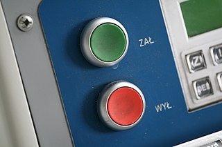

Little Schemer 1

Why The Little Schemer?
The Little Schemer (TLS) written by computer science professors Daniel P. Friedman and Daniel P. Friedman was a revolutionary book when it came out in its first edition as The Little Lisper based on the programming language Lisp in 1987. Subsequent editions switched to Lisp’s younger sister language Scheme. It was so unique because it followed a “Socratic” dialog style of question and answer in left and right columns throughout the book. Below is from the very first page of the first chapter 1 ŒíŒπŒ≥ Œ£ŒæŒ∑ŒµŒºŒµœÅ: Big Schemer; ŒõŒπœÑœÑŒªŒµ Œ£ŒæŒ∑ŒµŒºŒµœÅ: Little Schemer in Greek letters.
| Βιγ Σξηεμερ | Λιττλε Σξηεμερ |
|---|---|
| Is it true that this is an atom? | Yes, because atom1 is a string of characters beginning with the letter a. |
atom1 |
|
| Is it true that this is an atom? | Yes, because turkey is a string of characters beginning with a letter. |
turkey |
|
| Is it true that this is an atom? | Yes, because 1492 is a string of digits. |
1492 |
|
| Is it true that this is an atom? | Yes, because *abc$ is a string of characters beginning with a letter or special character other than a left ( or right ) parenthesis. |
*abc$ |
|
| Is it true that this is a list? | Yes, because (atom) is an atom enclosed by parentheses. |
(atom) |
|
| Is it true that this is a list? | Yes, because it is a collection of atoms [separated by spaces and] enclosed by parentheses. |
(atom turkey or) |
|
…or as we’ll present it
Βιγ Σξηεμερ: Is it true
that atom1 is an atom?
Λιττλε Σξηεμερ: Yes,
because atom1 is a string of characters beginning with the letter
a.
This Socratic dialog explores in its chatty conversation style a sort of loose mathematical formalism 2 Go here to see the Wikipedia discussion about mathematic formalism—although it’s a bit formal… where you the reader will experience a growing mental picture of theory and syntax as the conversation continues and the pages turn. Instead of making direct statements about programming language syntax rules, we get a stream of questions and replies that will gradually form the desired world in our own minds. We are if effect backing into Scheme programming and its underlying philosophy—and underlying is quite a bit of important computer science.
Some things, however, are directly stated. Before the first chapter entitled 1. Toys, even before the title page, there are listed (jokingly named?) The Ten Commandments, followed by The Five Rules. Again, this is a nod to, a play on the mathematical formalism of an axiomatic system. But what do we mean by an axiomatic system and why are they important?
The multi-volume set Euclid’s Elements (EE) from ca. 300 BC Greece is
generally accepted as being the first example of mathematics built on
axioms and pursued through proofs based on those axioms … and EE has
been in the Western world’s math curricula ever since. It was once a
staple of high school math, though often dreaded, as it was the
student’s first exposure to the strange idea of proving math instead
of just doing math. Proving something in math requires a deep grasp of
a topic, which is completely different from the typical style of “when
you see this, do this” conditioning. Starting with Euclidean Geometry,
the student is asked to see a geometric situation3
For example the (in)famous pons asinorum in Euclid’s
Elements

where it is proven that indeed the angles opposite the equal sides
of an isosceles triangle are themselves equal.
and understand
why something about it is necessarily (proven to be) true. The proof
of, e.g., the pons asinorum is a step-by-step establishing of
undeniable facts based on Euclid’s axioms called Postulates and
Notions. Again, this was the beginning of modern mathematics where a
set of axioms could be called on to build theorems, i.e., additional
true assumptions. Axioms can go by many names, e.g., basic truths,
givens, primitives. Here are Euclid’s five postulates
- P1
- A straight line may be drawn between any two points.
- P2
- Any terminated straight line may be extended indefinitely.
- P3
- A circle may be drawn with any given point as center and any given radius.
- P4
- All right angles are equal.
- P5
- Through a given point \(P\) not on a line \(L\), there is one and only one line in the plane of \(P\) and \(L\) which does not meet \(L\).
The last postulate is a more modern rewording of the original, meaning truly parallel lines may exist that never cross. To these first five, Euclid added another five basic truths, his Common Notions
- N1
- Things which are equal to the same thing are also equal to each other.
- N2
- If equals are added to equals, the wholes (results) are equal.
- N3
- If equals are subtracted from equals, the remainders are equal.
- N4
- Things which coincide with one another are equal to one another.
- N5
- The whole is greater than the part.
With these ten axiomatic statements begins much geometry, logic, number and set theory. That is to say, great amounts of implication, “if this then that” can be derived from these ten accepted givens.4 In mathematical logic the idea of implication is very fundamental. Something implies something else; because \(A\), that means \(B\) as well. Implication goes by many names: material conditional, modus ponens, logical consequence. We first see implication in programming with the basic if-then-else conditional. For example, the last notion, N5, seems to say something almost silly and trivial. But as this treatment explains, N5 is introducing with its odd wording the basic concept of one thing being larger than another, i.e., \(A>B\). Here’s David E. Joyce’s, professor of mathematics at Clark University, explanation
To say one magnitude \(B\) is a part of another \(A\) could be taken as saying that \(A\) is the sum of \(B\) and \(C\) for some third magnitude \(C\), the remainder. Symbolically, \(A > B\) means that there is some \(C\) such that \(A = B + C\).
Again, to the novice this may look like nit-picking, but real math comes from having these basic foundational givens—upon which new, useful math is solidly, logically built. Higher math5 Higher math in the U.S. typically means those college math courses pursued in the junior and senior year of a Bachelors math degree, i.e., those courses after Calculus, Differential Equations, and Linear Algebra. is the realm of axiomatic math where proofs of theorems are the staple. Higher math is where the student becomes a real mathematician who looks under the hood and learns what makes things really tick.
Let’s consider a more serious-looking set of axioms, again, taken from course material by Professor Joyce, then a proof of a theorem based, i.e., relying on these axioms6 These axioms are taken from Linear Algebra.
- Vector addition is commutative: \(\mathbf{v} + \mathbf{w} = \mathbf{w} + \mathbf{v}\).
- Vector addition is associative: \((\mathbf{u} + \mathbf{v}) + \mathbf{w} = \mathbf{u} + (\mathbf{v} + \mathbf{w})\).
- There is a vector, denoted \(\mathbf{0}\) such that \(\mathbf{v} + \mathbf{0} = \mathbf{v} = \mathbf{0} + \mathbf{v}\).
- For each \(\mathbf{v}\), there is another vector \(\mathbf{−v}\) such that \(\mathbf{v} + (\mathbf{−v}) = 0\).
- Scalar multiplication distributes over vector addition: \(c(\mathbf{v} + \mathbf{w}) = c\mathbf{v} + c\mathbf{w}\).
- Scalar multiplication distributes over real addition: \((c + d)\mathbf{v} = c\mathbf{v} + d\mathbf{v}\)
- Multiplication and scalar multiplication associate: \(c(d\mathbf{v}) = (cd)\mathbf{v}\).
- The number \(1\) acts as identity for scalar multiplication: \(1\mathbf{v} = \mathbf{v}\).
And now we’ll prove a very basic theorem relying on these axiom truths
Theorem: \(0\mathbf{v} = 0\)
…or zero times a vector \(\mathbf{v}\) is zero.
⌜
Proof: Since \(0 + 0
= 0\), therefore we can say \((0 + 0)\mathbf{v} = 0\mathbf{v}\). By axiom 6, that implies
\(0\mathbf{v} + 0\mathbf{v} = 0\mathbf{v}\). If we could subtract \(0\mathbf{v}\) from each side, we’d be
done, but subtraction isn’t yet defined. Still, we can add the
negation of \(0v\) to each side which should accomplish about the same
thing. Thus,
Next, we can associate the parentheses differently by axiom 2 to get
\begin{align*} 0\mathbf{v} + (0\mathbf{v} + (−0\mathbf{v})) = 0\mathbf{v} + (−0\mathbf{v}). \end{align*}
That equation simplifies by axiom 4 to \(0\mathbf{v} + 0 = 0\), and by
axiom 3, that further simplifies to \(0\mathbf{v} = 0\) which is what
was to be proved. Q.E.D.7
… quod erat demonstrandum, meaning “that which was to be
demonstrated”.
⌟
Got it? No worries (yet) if you didn’t. The point is to understand that this so-call higher math thing wants to be built exclusively on axioms. But yes, this is a strange world for the beginner so used to the usual “get stuff calculated” math. For example, in beginner algebra we never needed to show with a proof that an entity times zero is zero. So yes, here we have a thorough proof of something that we normally would have taken for granted. But again, this is the world of higher math where math becomes more of a philosophy than just a set of tools.8 Go ahead and take a “math holiday” by touring this page by Professor Joyce. He is speaking from a quasi-set theory standpoint, i.e., the basis of modern high math. But remember, Euclid was talking strictly about geometric shapes. Set theory had not been invented yet…
Axiomatic Scheme
And now with no further ado we will list out TLS’s version of “axiomatic givens” starting with The Ten Commandments
- First Commandment: When recurring on a list of atoms,
lat, ask two questions about it(null? lat)andelse; when recurring on a number,n, ask two questions about it:(zero? n)andelse; when recurring on a list of S-expressions,l, ask three question about it:(null? l),(atom? ( car l)), andelse. - Second Commandment: Use
consto build lists. - Third Commandment: When building a list, describe the first typical
element, and then
consit onto the natural recursion. - Fourth Commandment: Always change at least one argument while
recurring. When recurring on a list of atoms,
lat, use(cdr lat). When recurring on a number,n, use(sub1 n). And when recurring on a list of S-expressions,l, use(car l)and(cdr l)if neither(null? l)nor(atom? (car l))are true. [One argument] must be changed to be closer to termination. The changing argument must be tested in the termination condition: When usingcdr, test termination withnull?and when usingsub1, test termination withzero?. - Fifth Commandment: When building a value with \(+\), always use \(0\) for the value of the terminating line, for adding \(0\) does not change the value of an addition.
- Sixth Commandment: Simplify only after the function is correct.
- Seventh Commandment: Recur on the subparts that are of the same nature: on the sublists of a list; on the subexpressions of an arithmetic expression.
- Eighth Commandment: Use help functions to abstract from representations.
- Ninth Commandment: Abstract common patterns with a new function.
- Tenth Commandment: Build functions to collect more than one value at a time.
But wait there’s more. Next are the The Five Rules
- The Law of
car: The primitivecaris defined only for nonempty lists. - The Law of
cdr: The primitivecdris defined only for nonempty lists. Thecdrof any nonempty list is always another list. - The Law of
cons: The primitiveconstakes two arguments. The second argument toconsmust be a list. The result is a list. - The Law of
null?: The primitivenull?is defined only for lists. - The Law of
eq?: The primitiveeq?takes two arguments. Each must be a non-numeric atom.
Not many beginners can take these fifteen would-be axioms and know exactly how to write a Scheme program.9 …if we could, would each program we write technically be a new theorem? More on that later. Specifically, we’ll look into Douglas Hofstadter’s MU puzzle from his ground-breaking book G√∂del, Escher, Bach (1979). But then if you’ve read and understood a textbook such as Lists, Decisions and Graphs… by Edward Bender and S. Gill Williamson, you might catch on that these “fake” axioms are attempting is to establish some sort of omnibus10 …containing or including many items. list processing machinery. In fact Scheme’s predecessor, Lisp, is an acronym for “list processing,” because this is essentially what Lisp and Scheme do, i.e., they do computing tasks with, on lists. Really?! So in Lisp and Scheme we have a complete working programming language as just a bunch of lists stored in a computer file that some sort of evaluator processes and gives results? How does that work? Read on.
At this point we should really know, understand what a list is, seeing as how a list can be seen as the most primitive, basic, introductory data structure in programming. But then we all know in the everyday sense what a list is, right? A grocery list is a good example
- eggs
- milk
- flour
- potatoes
- butter
Not so fast. We have a problem—at least with the math world. That’s because in higher math there are also sets. So what is the difference between a list and a set? To the layman they might seem interchangeable. Set theory is the fundamental starting point of higher math, as well as CS’s Discrete Math.11 …although it may be veiled or only partially explored. And so many books on set theory and discrete math start out with the deceptively simple and informal statement
A set is collections of things … objects … stuff.
…which is kind of what a list is too. But to CS and higher math they are two different entities. What’s the difference? First, our grocery list is not technically a list because, again, in the CS/higher math world, the elements (members) of a list have a specific order. But then our grocery list above could be in any order, doesn’t really matter as long as you come home with the those groceries…
Plainly put, lists are defined as a collection of things in a specific order. Think of a string of letters like you’re reading right now. A string of alphanumeric characters can be considered a list because the order of the individual alphanumeric characters (and spaces in between) is everything. We typically call strings of letters and spaces sentences … where all the sentences in English are made up of differing combinations of the twenty-six letters (times two if we have both upper- and lower-case), the ten numerals, punctuation, and the space character. You can’t be placing individual characters in any order and still have sensible sentences. So is our “grocery list” really a set of groceries?
Actually no. We should not call a grocery list a set either because even though order doesn’t matter, sets allow duplicates. Really? In set theory there is the idea of the cardinality of a set, i.e., what is the count of the unique elements of the set, not counting duplicates.12 We indicate the cardinality of a set \(A\) by surrounding it with vertical pipes: \(|\,A\,|\) This is similar to the idea of a number’s absolute value which uses the same symbol.
⌜
ùñüùï≠: The set \(A = \{1,1,1,2,2\}\) is identical to set \(B = \{1, 2\}\)
because they have the same cardinality, or \(|\,A\,| = |\,B\,| =
2\).13
ùñüùï≠ is German for zum Beispiel or for example.
⌟
This can be explained in a few ways. The simplest is to say the members, the elements of a set belong to that set. So for example, if I belong to a club, it doesn’t make sense to have me belong-belong or belong twice to the club.14 …paying double membership fees? In the example above, \(1\) belongs to \(A\), so it doesn’t need to belong again.
Splitting hairs? Yes, well, set theory is a very fundamental thing in higher math and is, thus, very precisely defined based on axioms. For example, set theory has the Axiom of Extensionality which simply and directly states two sets are equal if they both have the same members. In our example \(A\) and \(B\) do indeed have the same members, namely, \(1\) and \(2\) —and it doesn’t matter, it doesn’t count that \(A\) repeats these members. Let’s look at another example
⌜
ùñüùï≠: Given the set \(A = \{\text{good, so-so, bad}\}\) and a list (as
a named Scheme list):
(define week3 '(good bad bad so-so so-so so-so good))
the set \(A\) signifies the possible moods a person might be in; while
week3 is the name we’ve defined for a list containing this daily
mood data we’re collecting each day of week 3.15
With our first introduction to Scheme syntax we’ve made a list
containing our list in order to define our list. Notice the nested
parentheses. More on how everything in Scheme is a list soon…
⌟
So the order of set \(A\) doesn’t matter (and we’d ignore, say, a second
\(good\)), but the order of the list defined as week3 is important
because we don’t want to mix up how we felt on what day, Sunday,
Monday, etc., good, bad, or so-so. Also, it makes perfect sense for a
list to have “repeats” since we’re evaluating many days in succession,
and each day can be one of the three choices. But then notice one more
thing about a set: When we built the list week3 we had to choose for
each day (each successive position in the list representing each day
of the week) good or bad or so-so. Remember Venn diagrams from
pre-school/Kindergarten? For example, this sort of or situation
can be shown with a union of circles.16
A Venn diagram of two sets or-ed, union-ed together.

The lens-shaped center area represents the “overlap,” i.e., what the
two sets represented as circles have in common.
Now, let’s go beyond the colored Venn diagram circles and take a more formal look at what a union is. Let’s make a formal definition of a union:17 \(\cup\) is the symbol for union.
The union of two sets \(A\) and \(B\) (denoted by \(A \cup B\)) is the set of elements which are in \(A\), in \(B\), or in both \(A\) and \(B\). 18 Could we have said, …in \(A\) and in \(B\) and in both \(A\) and \(B\)? Better not. More on why later.
Now, for our set \(A = \{\text{good, so-so, bad}\}\), we are using each
element just once per the day slot of week3. We can imagine \(A\) as
made up of the individual sets
Now, a union \(\{A_G \cup A_{S} \cup A_B \}\) will get us back to our original \(A = \{\text{good, so-so, bad}\}\). Why are we looking at our set of mood choices like this? Because our eventual software code will need some sort of decision based on or, i.e., we need just one of the three possibilities.
When we look at \(A_G\), \(A_{S}\), and \(A_B\) together we may call them disjoint sets since they have no elements in common when we union-ize them. And so if we made a Venn diagram, there would be no overlap between any of them. Lots more about data representations of disjoint sets in the future.
For another example of three set union-izing let’s take three common alphabets as sets—the Greek, Latin, and Cyrillic
\begin{align*} G &= \{Œë, Œí, Œì, Œî, Œï, Œñ, Œó, Œò, Œô, Œö, Œõ, Œú, Œù, Œû, Œü, Œ†, Œ°, Œ£, Œ§, Œ•, Œ¶, Œß, Œ®, Œ©\} \\ L &= \{A, B, C, D, E, F, G, H, I, J, K, L, M, N, O, P, Q, R, S, T, U, V, W, X, Y, Z\} \\ C &= \{A, Б, В, Г, Д, E, Ё, Ж, З, И, Й, K, Л, М, Н, О, П, Р, С, Т, У, Ф, Х, Ц, Ч, Ш, Ъ, \\ & Ы, Ь, Э, Ю, Я\} \end{align*}Now, let’s make a on big union-ed together set \(A\) out of the individual sets \(G\), \(L\), and \(C\)
\begin{align*} A &= \{ Α, Β, Γ, Δ, Ε, Ζ, Η, Θ, Ι, Κ, Λ, Μ, Ν, Ξ, Ο, Π, Ρ, Σ, Τ, Υ, \\ & Φ, Χ, Ψ, Ω, A, B, C, D, E, F, G, H, I, J, K, L, M, N, O, P, Q, R, \\ & S, T, U, V, W, X, Y, Z, A, Б, В, Г, Д, E, Ё, Ж, З, И, Й, K, Л, М, Н, \\ & О, П, Р, С, Т, У, Ф, Х, Ц, Ч, Ш, Ъ, Ы, Ь, Э, Ю, Я\} \end{align*}Below we see a Venn diagram for \(A\), i.e., circles in which the three sets of alphabetic characters are contained. We can also see how the intersecting circle edge lines also show the what any two alphabets share, and then in the very center what they all share

Of course for visual purposes not all the letters could be crowded into the diagram above, but we can see how the Venn diagram with its overlapping circles trick is beating duplicates. Visually we can see this happening, but is there a formal explanation? Short answer: yes.
Now let’s look at a formal definition of union in so-called set-builder notation19 (1) can be expanded for the union of more sets than just two.
\begin{align} A \cup B = \{x : x \in A \lor x \in B \} \end{align}This expression says the union of \(A\) and \(B\) equals the set of elements denoted by \(x\) such that an \(x\) can be an element from20 The symbol \(\in\) means “in” or “member of.” \(A\) or an element from \(B\).21 \(\lor\) is the symbol for logical or, aka logical disjunction. Take a crack at the Wikipedia article. But wait, or doesn’t quite sound right in English if we mean to union-ize two or more things, does it? To bring two or more sets together as one—their unique and shared element alike—don’t we mean to say, e.g., the union of \(A\) and \(B\) takes all the elements from both \(A\) and \(B\)? Yes, but set theory prefers to look at, e.g., the Venn diagram of the alphabets (Figure 2 above) and say, A letter belongs to the union of alphabets if it is from the Greek or from the Latin or from the Cyrillic alphabets. Again, we have the idea of sets and belonging to sets.
Now, look at that bulging middle triangle region of Figure 2 containing the letters all three alphabets have in common. This is the intersection of alphabet sets \(G\), \(L\), and \(C\). In this case we would say: A letter belongs to the center triangle (the intersection) if it belongs to \(G\) and it belongs to \(L\) and it belongs to \(C\). In other words, the letter has to belong to all three alphabets. This is more precise, something upon which higher math always insists.

And with one final piece of the puzzle we can put to rest this whole duplicates within sets issue. Let’s explore another logic concept that we actually encounter every day. In the modern world we’re constantly turning things on and off, e.g., a light switch with its on-off toggle. But occasionally we see two buttons---one for on, one for off. In the image to the right we have two buttons doing on and off instead of one. In such a case pushing the green on button just one initial time turns the device on and any additional pushing is disregarded. This is the same for the red off button. Push once for off—and any further pushes mean nothing. Basically, “I heard you the first time, you don’t have to repeat yourself.” This phenomenon has an official name: idempotence, and it crops up in many real-life places. For our set theory discussion imagine making a Venn diagram of the union of sets \(S_1 = \{5\}\) and \(S_2 = \{5\}\), i.e., two different sets containing the same single element. Wouldn’t this union be just one single circle containing the element \(5\)? Indeed it would. And if we added another set \(S_3 = \{5\}\) to the union, we would still have
\begin{align*} S_1 \cup S_2 \cup S_3 = \{5\} \end{align*}
i.e., just one circle representing \(5\). In fact, we could union
together an infinite amount of singleton22
A singleton (also known as a unit set or one-point set)
is a set with exactly one element.
sets of the form \(S_n =
\{5\}\) and they would produce the singleton set \(\{5\}\). Now for a bit
of abstraction. Consider a binary operator, i.e., anything that
takes two objects and does an operation on them to produce something
new. For example, addition is a binary operation, \(1 + 1\) is \(2\), as
is multiplication, \(3 \cdot 5\) is \(15\). Let’s then use the abstract symbol
\(\oplus\) to indicate any sort of binary operator. Now we can establish a
formal definition of idempotence
- A binary operation \(\oplus\) is said to be idempotent on a set \(S\) if \(x \oplus x = x \,\,\text{for all}\,\, x \in S\)
- An element \(x\) of a set \(S\) is said to be idempotent under a binary operator \(\oplus\) if \(x \oplus x = x\)
If multiplication is the binary operator on the set of all counting numbers \(\mathbb{N}\) then what numbers of \(\mathbb{N}\)23 \(\mathbb{N}\) is the symbol for the natural numbers, i.e., the positive integers \(1\), \(2\), \(3\ldots\) we use to count things. can we call idempotent according to the definition? Well, only \(0\) and \(1\) are idempotent:
\begin{align*} 0 \cdot 0 &= 0 \\ 1 \cdot 1 &= 1 \end{align*}All other numbers (\(x \gt 1\)) give increasingly larger squares of themselves, hence, \(0\) and \(1\) are idempotent, but the binary operation of multiplication is not.24 In her 2023 layman’s book The Joy of Abstraction mathematician Eugenia Cheng notes how the operation of mixing paint colors is basically idempotent. Why? If we add one paint to one other paint we always get just one new paint color. That is, there is never an additive or multiplicative increasing or intensifying, just a new color.
Now, let’s consider something that came up in a StackExchange Mathematics discussion here, which is tackling our issue of duplicates in a set by asking, why is \(\{1,1\} = \{1\}\)? Below we have a slight re-wording of the preferred, green-checked answer
An unordered tuple \(\{a_1,a_2,a_3,a_4\dots\}\) is defined as
By this convention,
\begin{align} \{1,1\} = \{x:x=1 \lor x=1 \} \end{align}So by the idempotency of \(\lor\) we have (2) the same as \(\{ x : x = 1 \}\), hence,
\begin{align*} \{1,1\} = \{1\} \end{align*}
Notice we are relying on the logical-or binary operator being idempotent for all \(x\) in the set. Generally, an unordered n-tuple is a set of the form \(\{a_1,a_2,\ldots, a_n\dots\}\), although a tuple is usually meant to be ordered.25 …such as, e.g., a pair of Cartesian coordinates \((a,b)\) where \(a\) is some real number on the x-axis and \(b\) is a real number on the y-axis. Obviously, with a Cartesian coordinate system \((a,b) \neq (b,a)\), since they’d be entirely different points on the plane. The only exception would be if \(a = b\). Again, idempotency of two identical sets is obvious when seen as Venn diagrams, but now we’ve seen in exact language how they are idempotent.
By the way, union and logical or are complimentary ideas. Consider this expression
\begin{align} a \in X \cup Y \iff a \in X \lor a \in Y \end{align}What does that double-arrow in the middle mean? If and only if. We’ll go into \(\iff\) in more exact detail later, but for now it means the truth of one side of the \(\iff\) requires the other side to be true also. So if \(a\) is an element of the union of \(X\) and \(Y\) then \(a\) must be an element of \(X\) or it is an element of \(Y\) or it is an element of both \(X\) and \(Y\) —and the other way around as well.
⥤ Summing up; data and data structures
We didn’t even get off the first page of TLS, but we have laid some of the groundwork we’ll need to proceed. And we can’t emphasize this enough: Computer science is a branch of applied mathematics, and we need to get the math going alongside, parallel to the computer stuff. So expect more math-stumbling-block clearing.
Next, lists. This lesson began our introduction to lists. We’ll learn more about how they are a very simple but important data structure in computer data management … but then we’re using the term data management differently then the greater lay world does. So a quick word about the whole concept of data and data structures before we really dive in ahead. Today the term data is mainly understood to be gobs and gobs of stuff held in databases or other storage schemes. That’s not what we mean by data. For us “data” can simply be a number returned from an algorithm. That is to say, data is what the programming logic, the “code” is producing. Yes, of course, this production of data can pool and amass into great piles in vast electronic storage bins, but, for instance, this is data
'(good bad bad so-so so-so so-so good)
i.e., a simple list surrounded in parentheses and prefaced by a quotation mark (“’”) at the beginning as is the custom in Scheme (and Lisp). That quote at the opening parenthesis indicates this is not code, rather, data. What we saw above
(define week3 '(good bad bad so-so so-so so-so good))
is a mixture of both code and data. In the next lesson we’ll get into the weeds on just how this mixture of code and data can work together.